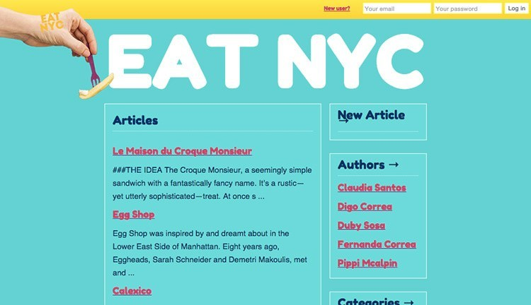

Flow
A web app to build flow charts
- Built with JQuery UI so that users can drag and drop building blocks to construct the flow charts.
- Used MongoDB to store flow charts and user settings.
- Developed the structure and design by using HTML, SVG, and CSS. And constructed with Node and Express.

Eat nyc
Wiki website to create and update articles about great food spots in NYC
- Developed with Sinatra, Ruby and SQL. Allowed users to login, create a profile, save articles, and update articles. They can browse by article, author or category.

Simon Says
A single-page web game
- Designed a clean user friendly interface of the game built with Javascript and jQuery.
- Used asynchronism callback functions and timed events to make the buttons lightup.
- Implemented a PostgresSQL database to save highscores.